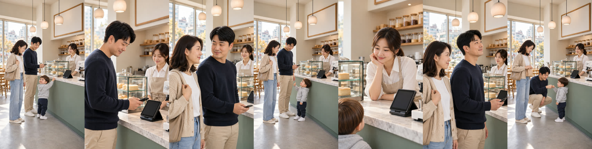
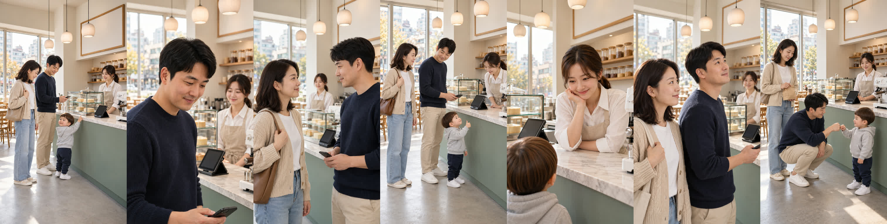
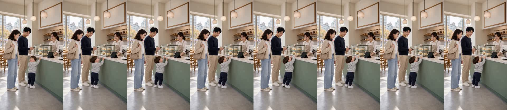
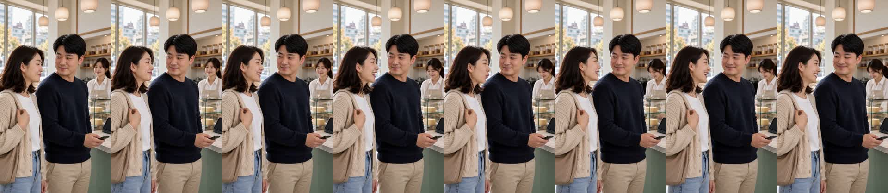
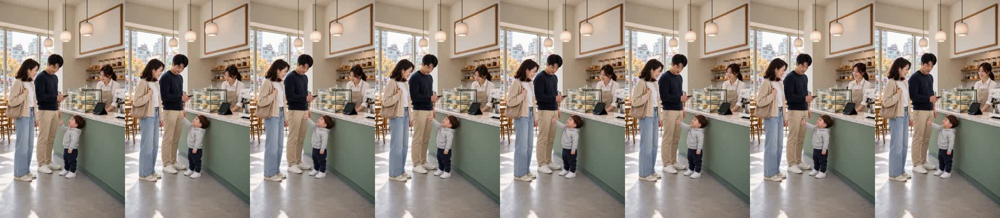
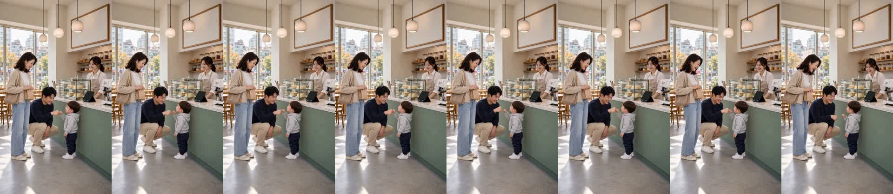

카페 «나이스!» — 1번 장면 자리 그대로
doyoon-cafe-nice-001 · R16 · 16.6초 · 7컷 · D0~D8 통과 · 2026-10-31
무엇이 달라졌나
- 대표님이 좋다고 하신 1번 그림을 장면 기준 그림으로 두고, 2~7번 시작 그림을 그 그림의 자리 그대로 그렸습니다. 엄마 왼쪽, 아빠 가운데(계산대 앞), 도윤 계산대 앞, 사장님 계산대 뒤 — 전 컷 같은 자리입니다.
- 넓은 화면 1·4·7번은 네 명 전원, 2·3·5·6번은 같은 자리에서 카메라만 다가간 화면입니다. 7번은 아빠가 그 자리에서 쪼그려 앉습니다.
- 재발 방지: 시작 그림 만드는 코드에 «장면 기준 그림» 기능을 넣었습니다. 기준 컷은 승인된 그림을 그대로 쓰고(해시 대조), 나머지는 그 그림을 참조로 받아 «아무도 자리를 옮기지 않는다»는 문장과 함께 그립니다.
흐름
1 도윤 «엄마, 빵!» → 2 아빠 «도윤이도 빵 하나 먹을까?» → 3 엄마 «그래, 오늘만이야~» → 4 도윤(엄지 척) «나이스!» → 5 사장님 «어머, 나이스래~» → 6 엄마 «…이런 말은 누가 가르쳤을까?» · 아빠 딴청 → 7 도윤(주먹) «아빠, 나이스!»
완성본 받아쓰기: «엄마! 빵! 도윤이도 빵 하나 먹을까? 그래, 오늘만이야. 나이스! 어머, 나이스래. 이런 말은 누가 가르쳤을까? 아빠, 나이스!» — 대본과 같음
봐 주셔야 할 것
- 2·3·6번은 말 시작 전 쉼(1.1~1.5초)이 있어 앞을 잘랐습니다. 대사 이어짐이 자연스러운지 봐 주세요.
- 4번 «나이스!»는 0.4초로 짧고, 도윤이 음높이 340Hz(경고선 330Hz 위)입니다.
- 썸네일은 앞 판(10-31 첫 다시 찍은 본)에서 만든 것을 그대로 썼습니다(아빠 놀람 + 도윤 엄지 척 + 사장님).
썸네일

시작 그림 (1번 = 장면 기준 그림)

이전 시작 그림 (자리가 바뀌던 판)

컷 프레임



